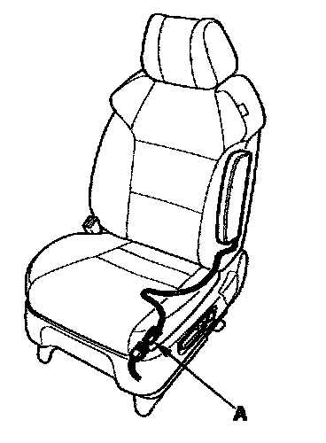
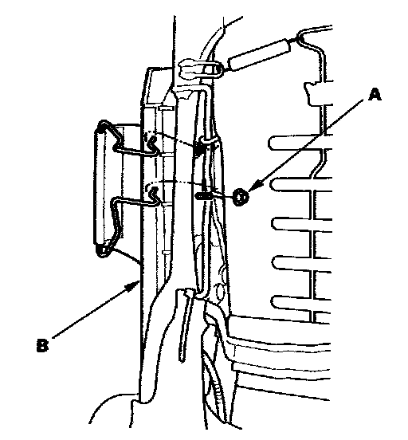
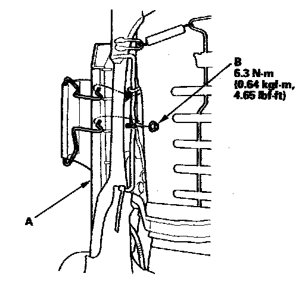

Side Airbag
Side Airbag ReplacementNOTE: Review the seat replacement procedure before performing repairs or service.
Removal
1. Disconnect the negative cable from the battery, and wait at least 3 minutes before beginning work.

2. Disconnect the side airbag harness 2P connector (A).
3. Remove the seat assembly and seat-back cover.
NOTE: If you are replacing a deployed airbag, replace the reinforcing cloth rear hooks.

4. Remove the mounting nut (A) and the side airbag (B).
Installation
NOTE:
- If the side airbag lid is secured with tape, remove the tape.
- Do not open the lid on the side airbag cover.
- Use new mounting nuts tightened to the specified torque.
- Make sure that the seat-back cover is installed properly. Improper installation may prevent proper deployment.
- Be sure to install the harness wires so that they are not pinched or interfering with other parts.

1. Place the new side airbag on the seat-back frame (A). Tighten the new side airbag mounting nut (B).
2. Install the seat-back cover in the reverse order of removal.
NOTE: If you are replacing a deployed airbag, replace the reinforcing cloth rear hooks.
3. Install the seat assembly, then connect the side airbag harness 2P connector.
4. Move the front seat and the seat-back through their full ranges of movement, making sure the harness wires are not pinched or interfering with other parts.
5. Reconnect the negative cable to the battery.
6. Connect the HDS, and clear the DTCs.
7. After installing the side airbag, confirm proper system operation: Turn the ignition switch ON (II); the SRS indicator should come on for about 6 seconds and then go off.